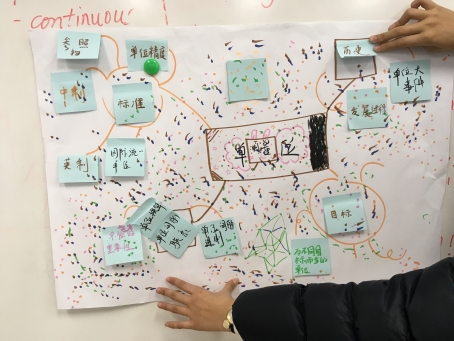
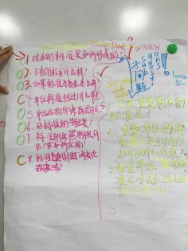
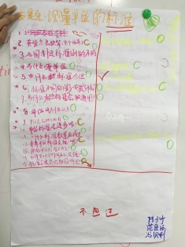
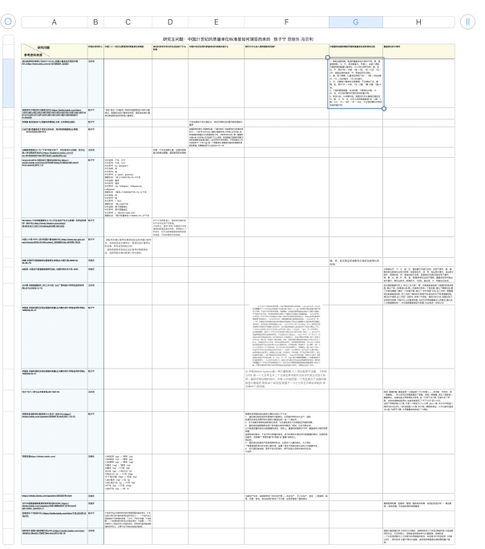
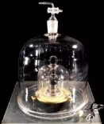
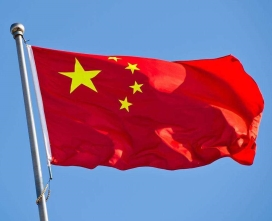

云谷学校测量PBL项目
研究报告
题名
中国21世纪的质量单位标准是如何演变而来的
作 者1 冯贝利 作 者2 陈子宁 作 者3 范佳乐
摘要
1.秦始皇统一度量衡后，一直没有变过，但到东汉末年后魏晋南北朝度量衡单位量便值急剧增长。
2.现在的国际千克元器已难以适应现代精密测量要求，到2019年的5月20日，“国际千克原器”将正式退役，取代它的将是符号为h的普朗克常数。
3.1984年至1997年，我们国家要求所有的单位都要使用法定计量单位，千克的到了普及。
关键词：1.主要重量单位，2.重量单位的影响，3.重量单位发展史，4.国际单位制，5.春秋战国时期的演变过程，6.重量单位大事件
正文内容
正文撰写应包含以下部分：
（1）定义和解释研究问题。
（2）研究的目的和意义
（3）简述研究过程以及过程中使用的工具和方法
（4）重点呈现研究的发现和结果，包括主问题和子问题以及二者的联系、子问题下收集的信息和证据。要求观点清晰、子问题能够支撑到主问题，能够有具体的证据解释了子问题。文字全部翻译成自己的语言。
我们的研究问题
我们的问题是“中国21世纪的质量单位标准是如何演变而来的”，主要研究的问题是中国21世纪的质量单位的演变过程——从古至今中国所使用的单位及其演变过程的整合。
目的&意义
研究这个问题，可以让我们对于古代的生活更加了解，对于古人的思想理解更加透彻。
研究过程
第一阶段-确定主题
我们第一阶段的主要是确定我们要研究的主题，我们先进行了Brain Storm，写下所有有关主题的内容，并将他们进行了分类。选择一个单位分类进行思维导图绘制（见图0-1），我们选择了其中「标准」分支作为我们的研究方向。在研究方向中提出相关的问题并选择其中一个作为我们要研究的主题（见图0-2，图0-3），我们选择了“ 中国21世纪的质量单位标准是如何演变而来的”作为我们要研究的主题。

图0-1 思维导图
 
图0-2 子问题图0-3 子问题
第二阶段-收集资料
我们在主题下提出了6个子问题：
• 中国二十一世纪主要使用的质量单位有哪些？
• 单位的改变对民众的生活造成了什么影响
• 中国21世纪在用的质量单位的发展史是什么
• 我们为什么加入使用国际单位制？
• 中国春秋战国时期到宋国的重量单位具体演变过程
• 重量单位的大事件
我们将他记录在了我们的笔记方格表中（见图0-4），我们在其中使用了很方便的「Collaborate」功能，此功能可以让我们共同编辑一份document。

图0-4 笔记方格表
第三阶段-研究成果
我们通过论文的方式来呈现我们的研究成果，陈子宁负责的是米制这一部分的研究成果的论文以及研究过程的写作，冯贝利负责古代单位，范佳乐负责其它部分（如关键词等）。
研究结果
传统的质量单位
作为传承了五千年的泱泱古国，中国自有一套源于数千年前的计量体系。
质量单位有详细记载的时期最早是春秋战国时期，但当时各国的计量单位并未统一，甚至各国有各国的进制——比如秦国和晋国的斛、斗、升就是十进制，同时期楚国的筲、升采用的则是五进制。
到计量单位统一，是战国时代后的秦朝。秦始皇下令统一度量衡，以之前秦国的单位为标准，但是由于秦朝过于短命，仅仅传承了两代皇帝就被汉朝所取代，所以秦始皇的功绩都便宜了汉朝。
从秦朝到汉朝的单位都没有太大变动，但是东汉末年后魏晋南北朝是度量衡单位量值急剧增长的时期，以一斤为例子，东汉时期的一斤约和现在的246克，等到北朝后期已经是一斤约和现在672克，增长了足足一倍还多。至于造成单位量值急剧增长的原因，主要是因为地方官员试图增加税收，私自提高量值以多收税，但只按照官方的“一斤”缴纳给朝廷，多余部分自然进了自己的腰包。
再来看看这些传统单位为什么要定成这样：
“三十斤为一钧，四钧为一石：一石共一百二十斤，即为一个士兵一个月口粮。度量衡的比例虽然确定下来，但缺乏确定绝对物质量的测量方法，比如秦国是用铁块来作为“权”（计量基准砝码）。所以，具体斤两代表的质量（现代标准）各个朝代是不一样的。秦朝时代的斤大约只有现代“市斤”的一半（258克左右），在缺少脂肪和蛋白质的古代，士兵一个月60市斤的口粮并不算多。很显然，“石”这个单位的确定，在古代可以大大方便计算军队的供应和运输。任何时代军粮也不是有多少送多少上前线的，必须在筹备和调拨前确定一个明确的数量。“钧和石”的定义看上去奇怪，在实际运用中（包括和平时期），多少人在多少天大致需要多少粮食就能快速折算成XXX石。比如三万石粮食够一万人三个月的消耗，或者五千人半年的消耗——换一个进制（比如100斤=一担），各种零数就麻烦多了。”——知乎网友
远古时期，人们没有精确的测量技术，只能以人身上的部位或者自然界中存在的事物为标准，至于为什么不是十进制，网上有一种说法：是因为在古代用标准器具确定标准量值时十分之一不好分，但是如果先分成二分之一，再分四分之一……就方便分到十六分之一。所以一斤等于十六两。
近代单位 陈子宁
千克作为我们21世纪的质量单位中的一种，他是我们日常生活中最常使用的基本单位之一。他诞生于法国大革命后18史记的法国。千克也是国际单位制中度量质量的基本单位。
初出
千克属于国际单位制。
国际单位制最早被称为米制，是1875年由出席米制外交会议代表正式签订的统一国际间单位制的协约。这个组织是完全独立于法国的。
在1887年, 国际计量委员会正式决定, 将KIII砝码的质量定义为质量单位千克。可是为什么会诞生出国际单位制呢？原来的单位不好吗？
其实是原来的单位，虽然给国家带来了很大的方便——农业生产、手工业生产、商业、工程建筑、战争、宗教、政治，但也给我们带来了不方便，国际单位制这一公正方便且通用的单位便因运而生。
现在的千克由国际千克元器（见图1-1）定义，来自巴黎附近的塞夫勒的国际计量局。

图1-1 国际千克元器
在中国…
中国（见图2-1）于一九七七年五月参加该组织,成为第44个成员国。
1984年至1997年，我们国家要求所有的单位都要使用法定计量单位，千克的到了普及。
我国的法定计量单位包括：国际单位制计量单位和国家选定的其他计量单位。
——《计量法》
国际计量单位和中国计量单位极其好换算，中国的1公斤就等于国际单位的1千克。

图2-1 中国
专业方面
国际单位制包括所有领域的计量单位，从而使科学技术与生产、国际贸易和日常生活等所有方面的计量单位统一在一个单位中。他消除多种单位制和单位并用，以及避免很多不合理甚至矛盾的现象。
国际单位制明确和澄清了很多量与单位的概念。例如，过去长期以来，公斤既是质量的单位也是重量的单位。实际上，重量和质量根本不同，重量是和力相同性质的量。而且国际单位制具有严密而简明的特点，它取消了大量的单位，使人们更加的方便。
未来
千克(符号kg)为国际单位制中度量质量的基本单位，千克也是日常生活中最常使用的基本单位之一。千克是唯一一个有国际单位制词头的基本单位，也是唯一一个仍然使用人工制品作定义的国际单位。
但是，现在的国际千克元器已难以适应现代精密测量要求，到2019年的5月20日，“国际千克原器”将正式退役，取代它的将是符号为h的普朗克常数。到时候，关于“千克”的误差将会更加可以“忽略不计”，关于“千克”的量值复现将会更加方便精确。
对于大多数普通人，国际单位制的变化不会对生活产生影响，对于大多数普通人，国际单位制的变化不会对生活产生影响，买菜也不会变贵。尽管一千克还是那么重，但是利用常量计算更加精确，超脱物理实体限制。
参考文献:
图书信息 著者．题名[M]．其他责任者．版本项．出版地（城市名）：出版者（可以是学术团体），出版年．
[1]安德鲁·鲁滨逊(2017).测量的故事[M].北京: 北京质检出版社
网络信息 作者(发布或更新日期). 资讯名称[类型]. 网址
[2]徐州圣能科技有限公司(2017-03-01).我国计量单位的演变历程[OL].http://www.sohu.com/a/127589004_523291
[3]百度百科.中国法定计量单位[OL].https://baike.baidu.com/item/%E4%B8%AD%E5%9B%BD%E6%B3%95%E5%AE%9A%E8%AE%A1%E9%87%8F%E5%8D%95%E4%BD%8D/662681?fr=aladdin
[4]沈乃澂.质量单位千克定义的历史、现状和发展趋势[J].物理,2014,43(09):606-612.
[5]北晚新视觉网(12-11).“千克”的定义变了，对生活没什么影响，但对这群人来说就是巨变[OL].https://baijiahao.baidu.com/s?id=1619530250718475371&wfr=spider&for=pc
[6]fanjianbin2010.中国法定计量单位[EB/OL].https://wenku.baidu.com/view/4757f201b52acfc789ebc997.html?from=search,2011.1.5.
[7] WuYaNan.千克将被重新定义 对人们生活会产生什么影响？买菜会变贵吗？[EB/OL].http://www.chinairn.com/news/20181212/111911712.shtml,2018年12月12日.
[8]中国人大网.中华人民共和国计量法[EB/OL].http://www.npc.gov.cn/npc/xinwen/2018-01/04/content_2036282.htm,2018年1月4日.
[9]邱隆.中国历代度量衡单位量值表及说明[J].中国计量,2006(10):46-48+76.
[10]赵晓军. 中国古代度量衡制度研究[D]. 中国科学技术大学, 2007.
[11]丘光明.中国度量衡史上的三次大统一[J].广西民族大学学报(自然科学版),2016,22(03):12-15.
[12]李国良.米制的演变及其在我国的发展[J].内蒙古师大学报(自然科学版),1986(04):35-41.
[13]何为“半斤八两”[J].农家参谋,2017(07):78.
[14]百度知道.国际单位制具有什么优点？[EB/OL].https://zhidao.baidu.com/question/29298176.html,2017-10-12.
[15]古代中国度量衡制度演变的阶段性特点[OL] https://zhidao.baidu.com/question/436128959253714724.html?qbl=relate_question_0
[16]百度百科.千克[EB/OL].https://baike.baidu.com/item/千克,2018年12月27日.
[17]纷陀利华.我国计量发展历史[J/OL].https://wenku.baidu.com/view/165d0fc128ea81c758f578eb.html,2013-06-16.